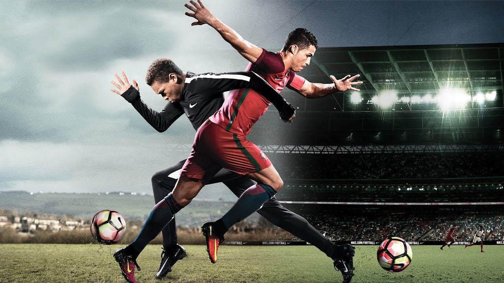
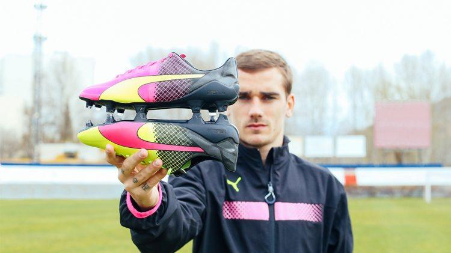
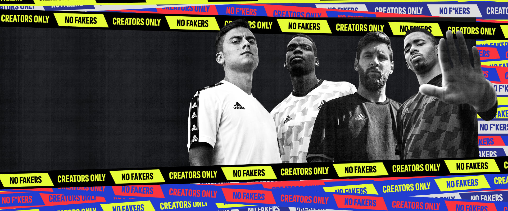

Nike Best Boots
Best Midfielder's Boots:
Mercurial Superfly,Mercurial Vapor 13 Elite ,CR7,Nike Hypervenom Phantom IIIBest Midfielder's Boots:
Phantom Venom Elite FG Future DNA,Magista Obra II,Phantom Vision EliteBest Midfielder's Boots:
Tiempo legend 8, Premier II FG, Tiempo Legend 8 Elite FG Neighbourhood,Legend VII SR4

Puma Best Boots
Best Forward's Boots:
Puma One, Future 5.1 Netfit FG/AG Spark,Puma Future 4.1,evoSPEEDBest Midfielder's Boots:
PUMA ONE 20.1 'RISE PACK , Puma EvoPower 3 Tricks FG,EvoPower vigor 2Best Defender's Boots:
PUMA ONE 20.1, Future 19.1
Keepers Best Gloves
Under Armour Desafio Premier – Best Traditional Cut
Adidas Ace Trans Pro – Best For A Tight Fit
Adidas Adult Classic Pro Goalkeeper Gloves
Adidas Predator Pro PC Goalkeeper Gloves
Nike Mercurial Touch Elite Goalkeeper Gloves
Puma EvoDisc – Best For Ultimate Grip
Puma Evopower Grip 2.3 Goalkeeper Gloves
Umbro Neo Pro Shotgun – Best All-Rounder
Reusch Attrakt Freegel G3 Fusion OT LTD
4KEEPERS Goalkeeper Gloves RETRO III BLACK RF

Adidas Best Gloves
Best Forward's Boots:
Adidas X19.1,Adidas X 19+,Copa 20+, Nemeziz 19+Best Midfielder's Boots:
Predator Mutator 20+FG,Predator Mutator 20.1 SG,Adidas 11PRO FG WC, Adidas 11proBest Defender's Boots:
Adidas Copa 20.1,Copa Mundial FG,Copa 20.1 FG/AG UNIFORMA